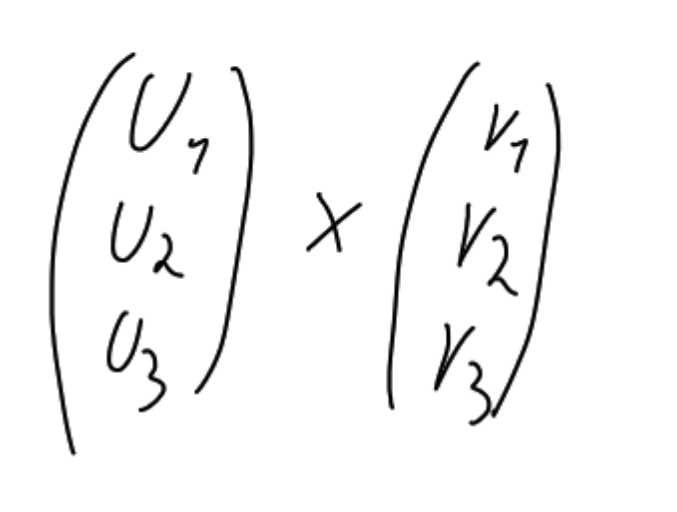
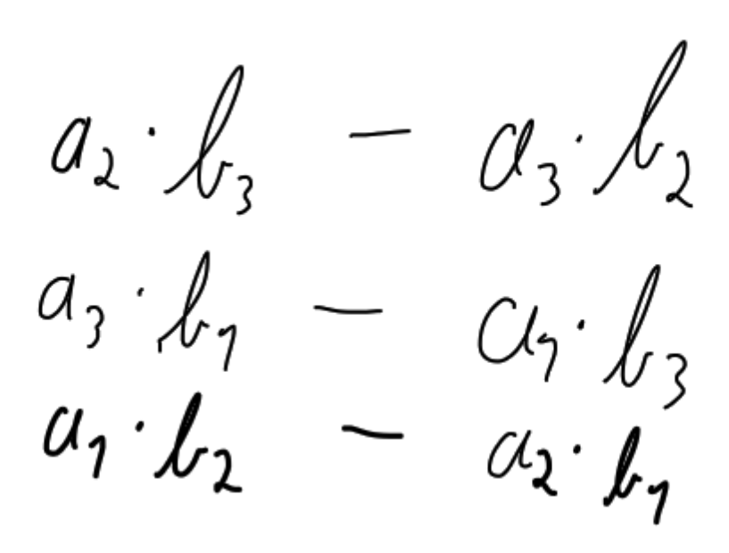
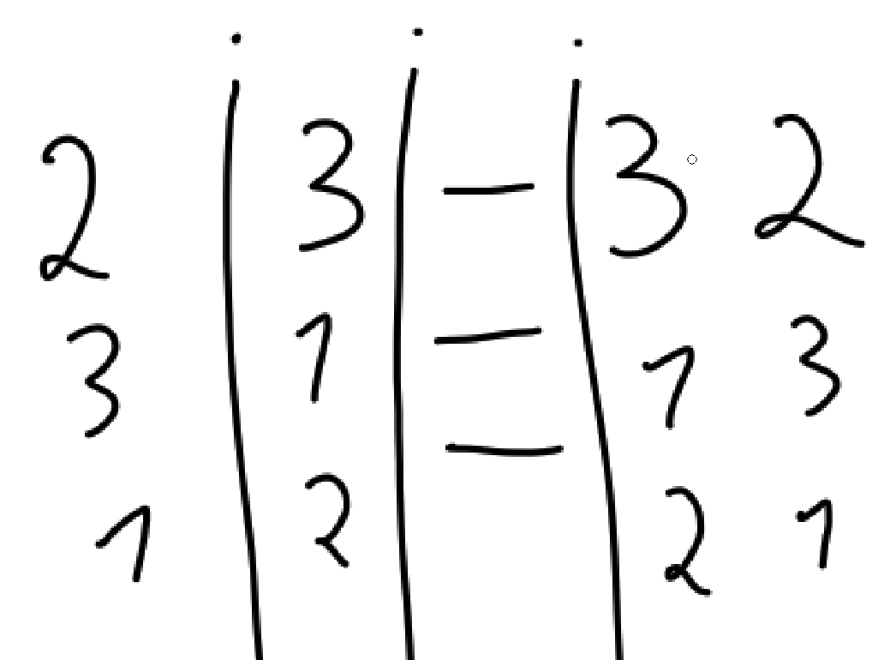

Kreuzprodukt
-
Schreibweise:

-
Rechenweg:

-
MerkHilfe:
Welcher Komponent mit welchem Multipliziert wird kann etwas schwer uz merken sein.
es gibt Komponenten 1 2 und 3 und auch nur in dieser Reinfolge
doch sie beginnen nicht bei 1 und sie wiederholen sich (also nach 1 kommt 3)
Ich persöhnlich merke mir also nur die nummer (index) der Komponenten am Anfang und gehe diese der Reihe nach durch nach unten.
Wichtig ist dann nur noch der Anfang 2332
